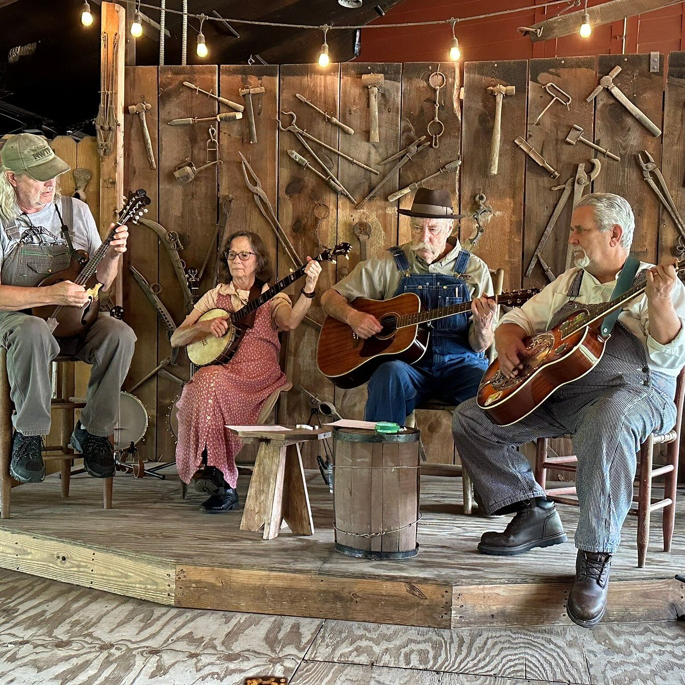
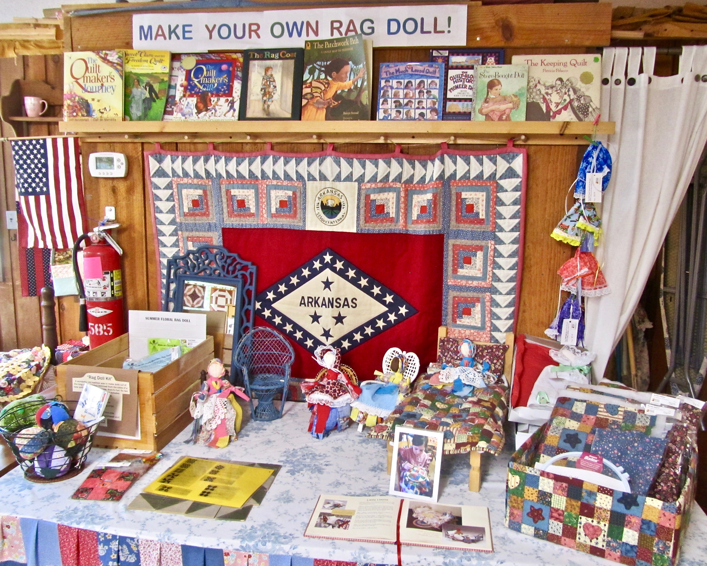
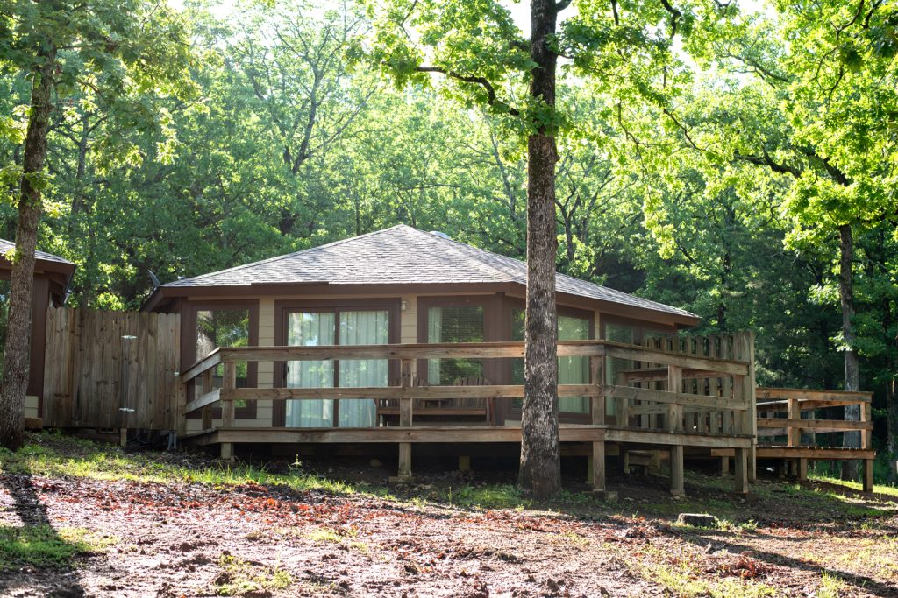

The park is dedicated to perpetuating the music, crafts, and culture of the Ozarks. Located in Mountain View, Arkansas, and open mid-April to mid-November, the park offers visitors an opportunity to watch artisans work, to stroll through the Heritage Herb Garden, and to hear live Southern mountain music.

Music is at the heart of this park. Fiddle, banjo, guitar, mandolin, dulcimer, and autoharp are just some of the instruments that combine to produce that enduring Ozark Mountain sound. While you're in the Craft Village, check out live music on the Blacksmith Stage throughout the day. You don't want to miss the talented local musicians that perform in this intimate setting. The 1,000-seat Ozark Highlands Theater hosts live concerts, special events, bringing legendary artists from all facets of Americana music to the stage.

In the Craft Village at Ozark Folk Center, more than 20 working artisans demonstrate, create, and sell handcrafted items like flame-painted copper jewelry, leather purses and goods, baskets, brooms, stained glass, ironwork, pottery, knives, weavings, quilts, wood carvings, spun yarn, soap, candles, and more are made onsite.
The Heritage Herb Garden is where old-time pass-along plants, medicinal herbs, native plants, and edible herbs are grown. The Garden functions as a living classroom for workshops and programs.

When booking a visit, check availability at the Cabins at Dry Creek, our beautiful cabins with suites available, and amenities of home. Enjoy Southern cooking in the Skillet Restaurant. One of Arkansas's five lodge parks, the Ozark Folk Center also has a conference center with facilities for unique and memorable meetings.